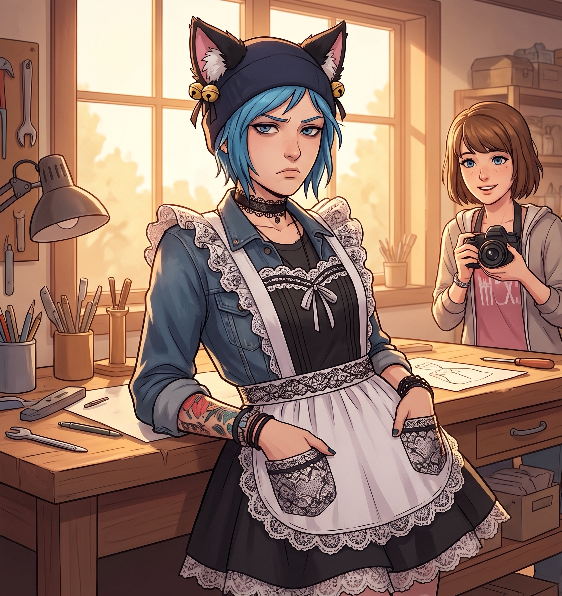
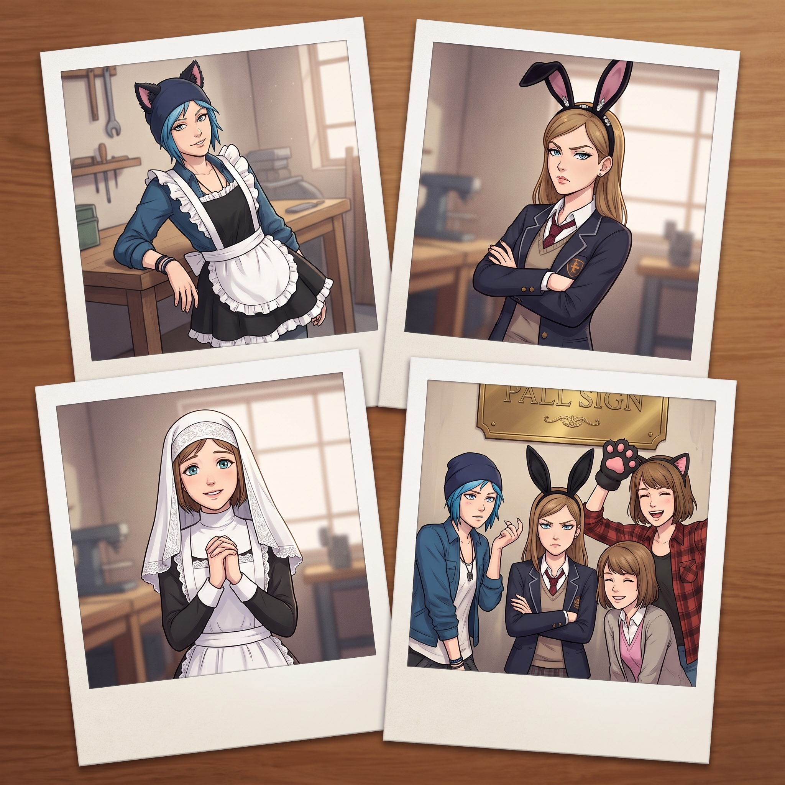

全員淪陷


自從上次學院教授來驗收實習場地、Chloe 被迫套上圍裙端茶倒水並意外收穫全場讚譽後，Max 就一直沒能忘記那個畫面——粗獷的機油味搭配一條荷葉邊圍裙，那種反差感讓她想起了高中在雙鯨魚餐廳打工、被 Chloe 半哄半逼穿上女僕裝、結果意外在 Instagram 爆紅的那次。這幾天，Max 看著 Chloe 在車床前揮汗如雨的背影，黑框眼鏡後總閃爍著一種讓人毛骨悚然的熱切光芒——她內心某個關於「極致反差美學」的開關，被徹底打開了。
週五下午，一包從波特蘭復古動漫精品店寄來的神秘快遞送到了 Loft。
Max 從裡面掏出了一套黑白相間的蕾絲哥特女僕圍裙、一對毛茸茸的黑色貓耳髮箍，還有一條蕾絲項圈,眼神亮晶晶地舉到 Chloe 面前,聲稱是為工坊視覺檔案集做的「角色對比實驗」。
Chloe 當場嚇得後退三步,拼死抵抗,但在 Victoria「吉祥物行銷能為Instagram帶來流量」的商業說辭、Kate 溫柔到不容拒絕的梳理攻勢,以及 Max「幫忙算完材料力學作業」的重磅籌碼三重夾擊下,最終還是被按在工作台前,乖乖戴上了那對會叮噹作響的黑貓耳。
拍完照後，Chloe 靠在橡木工作台邊，雙手插在圍裙的蕾絲小兜裡，故意抖了抖頭頂的毛絨黑貓耳，嘴角扯出一個標準的「Price 式壞笑」。
「行啊，Maxine，搞視覺藝術是吧？但作為工坊的最高法人，老娘必須指出——單一模特兒的視覺樣本根本不符合妳大攝影師的大畫幅組照要求。」
Chloe 突然轉向站在旁邊抱胸看熱鬧的 Victoria 和捧著茶杯的 Kate，語氣極其欠揍：
「更何況，這套盒子裡明明還有兩副配件——一副是純白色的天主教修女軟蕾絲花邊頭巾，另一副是鑲著奧地利水鑽的哥特名媛黑絲絨兔耳。怎麼？兩位高貴的股東兼大天使，只敢當觀眾，不敢親自下場為工坊的『行為藝術』獻身？」
一場原本針對 Chloe 的單方面處刑，瞬間升級為「四人全員連環翻車大混戰」。
一、Victoria 的自信反擊與光速翻車
面對 Chloe 的挑釁，Victoria 挑起一邊眉毛，發出一聲冷笑：「Price，別把妳那種底層審美強加在我身上。那頂水鑽黑絲絨兔耳？我十歲在西雅圖參加萬聖節私人名媛沙龍時就戴過比這高級一百倍的——」
「那就戴上給我們的大攝影師瞧瞧唄，Chase 大小姐，」Chloe 迅速使出激將法，「還是說，妳怕自己的氣場壓不住一對蕾絲兔子耳朵？」
「笑話。」Victoria 為了證明自己的名媛氣場能駕馭世間一切剪裁，毫不猶豫地接過那頂精緻的黑絲絨兔耳髮箍，優雅俐落地往頭上一戴，甚至順手披上了那條帶有黑色天鵝絨滾邊的小披肩。
她踩著高跟鞋，雙手抱胸，下巴微揚，眼神冷傲，整個人散發出一種「我不是在扮演女僕，我是來收購你們這家破女僕咖啡廳的跨國女總裁」的極致壓迫感。
然而，維多利亞算漏了 Max。
Max 看到這一幕，黑框眼鏡後的眼睛「唰」地一下亮得像兩顆超新星。她甚至沒有說話，直接以神乎其技的手速掏出反光板，拉出柔光布，並用一種近乎朝聖的眼神死死盯著 Victoria：「天哪……Victoria！這個高傲冷艷的反差萌！這就是 90 年代先鋒超模走秀的解構主義！別動！眼神保持這份想殺了我的輕蔑感！絕對完美！！」
Victoria 被 Max 那種毫無雜質、純粹到極致的「藝術家癡迷凝視」盯得渾身發毛，原本準備好的嘲諷台詞全卡在喉嚨裡，耳根以肉眼可見的速度紅透，整個人僵硬在鏡頭前進退兩難：「Caulfield……把妳那副癡漢眼鏡給我摘下來！不准拍全身照！！」
二、Kate 的溫柔黑化與全面倒戈
眼看 Victoria 也被架上了處刑台，Chloe 立刻把魔爪伸向了最後的淨土——Kate。
「還有妳，Marsh！別以為捧著茶杯就能隱身！」Chloe 抓起那副純白色的蕾絲軟花邊頭巾和同款荷葉邊長圍裙，「來，給工坊的大天使加冕！」
Kate 眨了眨無辜的藍眼睛，沒有像 Chloe 那樣暴躁，也沒有像 Victoria 那樣傲嬌。她非常溫柔、甚至帶著一絲順從地接過了白蕾絲頭巾，乖巧地戴在金色的短髮上，繫好了長圍裙。
當她雙手交疊在圍裙前，微微低頭，在陽光下綻開一個純淨得毫無瑕疵的聖母式微笑時——整個車廂的空氣瞬間被「淨化」了。
那種神聖、純潔、宛如文藝復興油畫裡走出來的古典修女氣質，強大到讓在場的所有人產生了一種「自己在裡面說一句髒話都是在犯罪」的窒息感。
連 Chloe 都被這股聖光正面暴擊，後退了半步，嘴裡的薄荷糖差點掉出來：「靠……這不科學，為什麼大天使穿上這玩意兒看起來像隨時準備把我超度昇天？！」
緊接著，Kate 抬起頭，眉眼彎彎地走到 Chloe 身邊，伸出柔軟的手替 Chloe 扶正了那對毛茸茸的黑貓耳，隨後用最溫柔的聲音給予了致命補刀：
「Chloe，既然大家戴得這麼整齊……不如我們一起站在工坊門口的黃銅招牌下，讓 Max 拍一張『工坊全體員工制服合影』，掛在車廂進門的第一個相框裡，好不好呀？」
Chloe：「？？？等一下？！Marsh 妳怎麼突然叛變了？！」
三、終極落幕：四人全滅的時光定格
原本想拉所有人下水看笑話的 Chloe，萬萬沒想到最後的走向變成了：Kate 帶著神聖純潔的微笑，掌控了全場節奏；Victoria 戴著黑絲絨兔耳，一邊羞恥地偏著頭咬牙切齒，一邊在 Max 的指導下擺出完美的先鋒超模 POSE；Chloe 頭頂黑貓耳、繫著短圍裙，在另外三人的包圍下徹底放棄了掙扎；而唯一穿著正常格子襯衫的 Max，則因為過度興奮而處於狂熱狀態，甚至在 Chloe 試圖把最後一個備用貓爪手套套到 Max 頭上時，被 Max 順水推舟直接戴在頭頂，成就了全員 Cosplay 的壯舉。
「咔嚓——滋——」
自動計時快門落下。
底片緩緩吐出：畫面上，黑貓耳 Chloe 翻著白眼一臉生無可戀；兔耳名媛 Victoria 抱胸傲嬌地斜睨鏡頭；白蕾絲 Kate 溫柔合十宛如聖母降臨；而抓著快門線的 Max 則頂著貓爪手套笑得前仰後合。
這張照片最終被 Victoria 簽署了「最高機密·嚴禁外傳」的保密條款，但依然被 Max 悄悄洗成了微縮尺寸，塞進了那本厚皮紀念冊的最深處，成為了這間火車工坊最無可替代、也最荒唐溫暖的盛夏秘密。